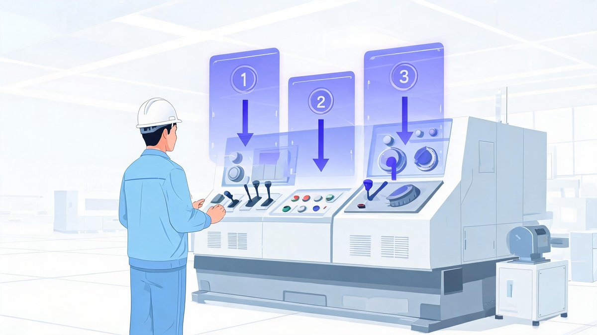
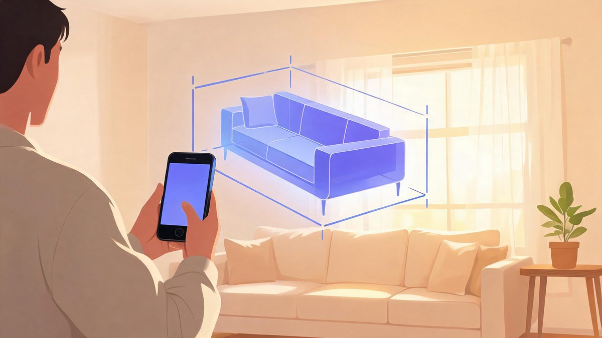

It is like real life, but better. That one line is the entire augmented-reality pitch: keep the real world exactly as it is, and layer the digital one on top of it. No headset isolation, no alternate universe — just your warehouse, your showroom, or your operating room with the right information floating exactly where the work happens. In 2026 that pitch has quietly grown up: AR now trains surgeons, guides factory mechanics, closes furniture sales, and beams a 40-inch monitor out of a backpack-sized pair of glasses. Here is what augmented reality actually is, where it is already earning its keep, and how to start using it with the phone already in your pocket.
🔑 Key Takeaways
- Augmented reality overlays digital content — images, text, 3D models — onto the real world in real time, via phones, tablets, or smart glasses
- The big business payoffs: faster training, fewer errors in maintenance, higher sales conversion, and real-time data overlays for decisions
- Proven uses now span remote expert assistance, surgeon overlays, pick-by-vision warehouses, virtual try-ons, and portable monitors via lightweight AR glasses
- You do not need special hardware to start: Apple ARKit and Google ARCore turn modern smartphones into AR devices
- Limitations are real — older phones, low light, and tracking accuracy still constrain the experience
- What Is Augmented Reality in Simple Words?
- Why Business Performance Is AR's Real Use Case
- 7 AR Applications Already at Work
- Workplaces and Factories: Where AR Earns Trust
- AR Glasses as Portable Monitors
- Can I Use My Phone as AR?
- Limitations to Know Before You Deploy
- Frequently Asked Questions
- The Bottom Line
What Is Augmented Reality in Simple Words?
Augmented reality (AR) adds digital layers to the real world. It places virtual objects — images, text, 3D models, or animations — into your actual physical surroundings using a phone, tablet, or smart glasses. Unlike virtual reality, which replaces your surroundings entirely, AR combines virtual content with the real world in real time, so you stay present while the useful information lands on top of what you already see.
The mechanics are simple enough: a camera captures your surroundings, software like Apple ARKit or Google ARCore reads your movement, lighting, and surfaces, and the system pins virtual objects to stable positions in your view. Move around, and the object holds its place. That stability is what separates AR from a gimmick — it is why a virtual valve handle can sit on a real pump and be inspected like it belongs there.
Why Business Performance Is AR's Real Use Case
Most enterprise software makes you leave the work to look at the information — open a dashboard, check a manual, switch screens. AR inverts that: the data comes to the work. A technician sees torque values floating on the bolts they are tightening. A new hire sees the next step hovering over the machine they are learning. A salesperson's customer sees the sofa standing in their own living room at true scale.
That inversion is why AR performance gains compound across functions. The same overlay logic that cuts repair time also cuts onboarding time; the same visualization that sells furniture also de-risks factory layouts. One technology, one interaction model, many payoffs — and the seven applications below are already in production, not pilots.
7 AR Applications Already at Work
1. Remote assistance. Experts guide on-site workers with live video, annotations, and AR overlays to fix equipment or pass inspections — the senior engineer sees what the junior sees, and draws arrows on reality itself.
2. Training and onboarding. Interactive AR simulations let new hires practice tasks in a safe, realistic environment with step-by-step guidance — mistakes cost nothing, and repetition builds speed.

3. Maintenance and repair. Technicians see component labels, service histories, and repair instructions directly on machines — repair time and downtime both drop because nothing is left to memory.
4. Warehouse and logistics. AR pick-by-vision systems highlight items and optimal routes, improving picking accuracy and throughput across massive fulfillment floors.
5. Sales and marketing. Customers visualize products in their own environment — furniture, apparel, signage — which increases confidence and conversion rates before they ever reach checkout.
6. Field service optimization. AR apps hand service routes, asset data, and parts lists to field technicians, improving first-time-fix rates on every call.
7. Design and prototyping. Teams overlay virtual prototypes on physical spaces to evaluate fit, ergonomics, and aesthetics quickly — catching problems before anything is manufactured.
Workplaces and Factories: Where AR Earns Trust
The highest-stakes AR deployments share one property: the user cannot afford to look away. Mechanics, factory workers, and surgeons use AR overlays to see real-time instructions, blueprints, or vital data without taking their eyes off the task — in an operating room or on a production line, that eyes-on-target fraction of a second is exactly where safety and quality live.
Healthcare adds its own layer: surgical overlays put vitals and imaging where the surgeon's eyes already are. Manufacturing pairs AR with quality control, flagging the exact fastener that needs checking. The pattern repeats across every heavy industry — AR wins wherever hands are busy and eyes must stay on the work.
AR Glasses as Portable Monitors
Not every AR story is industrial. A fast-growing consumer-and-business category is the lightweight AR glasses as portable monitors — remote workers and travelers use glasses like Xreal or Viture to project large, private virtual screens for their laptops on airplanes or in cafés. The laptop becomes the engine; the glasses become a 40-inch-class display only you can see, in an economy class seat.
For distributed teams this quietly solves a real problem: screen privacy on the road, multi-monitor setups in one backpack. It is also the most accessible AR entry point for individuals — no enterprise deployment, no custom app, just a USB-C cable and a working session that looks like empty air to everyone around you.
Can I Use My Phone as AR?
Yes — and for most people and most businesses, the phone is the right place to start. Most modern smartphones can function as AR devices using built-in hardware and software:
- Required hardware: a camera, accelerometer, gyroscope, and ideally a fast processor with a good GPU for smooth rendering
- Built-in software: Apple ARKit on iOS and Google ARCore on Android provide the tracking and scene understanding needed for AR experiences
- Tracking: these frameworks read your movement, lighting, and surfaces to place and stabilize virtual objects in the real world
- Apps: AR measuring tools, interior-design previews, and AR navigation are installable today from the App Store and Google Play

Try it in five minutes: open a measuring app and measure a room, place a life-size furniture model on your floor, or point AR navigation arrows down an unfamiliar street. Everything above runs on ARKit or ARCore — no purchase beyond the phone you already carry.
Limitations to Know Before You Deploy
AR's constraints are honest and worth naming before budgeting. Older phones may have reduced tracking accuracy, limited surface detection, or poor rendering performance. Low light degrades tracking quality for every device class. And headset-grade overlays for frontline work still demand purpose-built hardware — the phone is the training ground, not the end state for a factory floor.
None of these limits reverse the direction of travel. ARKit and ARCore improve yearly, lightweight glasses keep getting cheaper, and every generation of phones raises the baseline. The businesses that learned AR's interaction model early — data where the work happens — are the ones reusing that muscle today.
Frequently Asked Questions
What is augmented reality in simple words?
Augmented reality adds digital layers to the real world. It places virtual objects — images, text, 3D models, or animations — into your actual physical surroundings using a phone, tablet, or smart glasses, combining virtual content with the real world in real time.
Can I use my phone as AR?
Yes. Most modern smartphones work as AR devices using a camera, accelerometer, gyroscope, and software like Apple ARKit or Google ARCore, which read your movement, lighting, and surfaces to place and stabilize virtual objects. AR measuring, design, and navigation apps are available today on both major app stores.
How does AR improve business performance?
AR brings information to where work happens instead of pulling workers away to consult screens or manuals. The measurable wins concentrate in training (faster onboarding with fewer errors), maintenance (repair instructions overlaid on machines), sales (product visualization that raises conversion), and field service (higher first-time-fix rates).
Which industries use AR the most?
Manufacturing, healthcare, logistics, and field service lead adoption — mechanics, factory workers, and surgeons use AR overlays for real-time instructions and data without looking away from tasks. Warehousing uses pick-by-vision systems, and retail uses virtual try-ons and product previews to lift conversion.
What are AR glasses used for in business?
Two main uses: frontline overlays, where workers see instructions, blueprints, or vital data hands-free; and portable monitors, where lightweight glasses like Xreal or Viture project large private virtual screens for laptops — popular with remote workers and travelers working in planes and cafés.
The Bottom Line
Augmented reality has crossed from demo to daily tool by solving the oldest problem in enterprise software: the gap between the data and the work. Start with the phone in your team's pockets, pilot where looking away costs the most, and let the use case — not the hardware catalog — drive the roadmap. The overlay era is not coming; it is already running your warehouse, your training program, and possibly your next sales call. For more on the tech reshaping work, see our Samsung AR feature coverage and our best AI newsletters for leaders.
Sources: Apple ARKit (official developer documentation), Google ARCore (official developer documentation), AMT — The Association for Manufacturing Technology (workplace AR use cases), Xreal and Viture (portable AR monitor glasses).